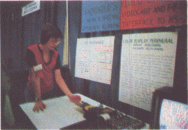

| By Chris Morgan, Editor | Photographs by Charles Floto |
Over 36,00 people filled the Dallas Convention Center on June 13 to 16 to attend the biggest National Computer Conference ever. Virtually every manufacturer in the computing field was there either to exhibit or to take notes. But waht made this yar's NCC different from past shows was the NCC sponsored Personal Computing Fair and Exposition held concurrently in the Convention Center.
| Photo 1: The main exhibit hall at the NCC | Photo 3: Another view of the main exhibiton hall. |
| Photo 2: The Personal Computing section of the NCC. | |
Manufacturers of personal computers and related products turned out in force to display their wares before large crowds. Hopeful hobbyists and experimenters exhibited their home computer projects at the Personal Computing Fair (devoted entirely to noncommercial invidual and group owned projects), and vied to win prizes.
Both sections of the show featured extensive seminars and panel discussions about present and future uses of computers; personal computing club representatives met to discuss the possibility of forming a National Club Congress.
It was gratifying to see long term NCC veterans mingling with hacres from all over the country in a congenial atmosphere filled with microcomputers that played games and dazzled the eye with elegant color graphics. One group learned from other and ideas were exchanged at extremely high rates.
Seeing everything at the show was quite a challenge: some 300 manufacturers were spread out over five football field's worth of exhibits upstairs. And the main floor exihibits were big: Data General, for example, brought an entire working planetarium controlled by a Nova minicomputer and capable of holding 50 people inside. Many of the booths were two stories high; others took up areoas of 30 by 60 feet or more
| Photo 5: Deborah Ashman demostrating her robot Joey, who moved back and forth to the tune, "If I Only Had a Brain." | |
| Photo 4: Commodore's new PET computer, a popular item at the show. The unit features 14 K bytes of read only memory including an operating system, diagnostic routines and an 8K BASIC interperter by Microsoft. It sells for $595 including 4 K bytes of programmable memory. A lengthy waiting list is predicted for the unit. | |
| Photo 6: Was Stewart working at the cabinet desk he built for his SwTPC 6800 computer system. The program running is a golf simulation. |
There was much to see in the Personal Computing section downstairs, too: Commodore's new PET microcomputer, a variety of the latest video games programs (including atank game for micros), new music programs, talking computers, software packages for FORTRAN, business programs, floppy disks, and so on.
Summarizing the entire show is almost impossible: we found it inspiring (and sometimes frustrating!) to look at the some of the state of the art devices, such as high resolution video displays, on view in the main exhibit hall.
From the looks of this convention, the computer industry is in good shape, and we look forward to an even bigger and better show next year.
| Photo 7: Allen Isaacson demostrates one of the exhibits at the Personal Computing Fair: a video game converted into a color graphics terminal that uses a Teletype instead of a joystick. The hardware was designed by Robert and Richard Bejamin, father and son, respectively. |  |
| Photo 8: Personal Computing Fair first prize winner Tom Aschenbrenner shown with the system he amassed over a five year period from surplus computer parts. A Texas Instruments 980A controls a system which stores and transmits messages for the benefit of Dallas area hams. | |
| Photo 9: Photographer Floto reflects on Sperry Univac's shiny display. | |
Published in BYTE volume 2 number 10, October 1977.
Courtesy of BYTE.com, http://www.byte.com
| This page has been created by Sami Rautiainen. | |
| Read the small print. | Last updated September 05, 2020. |